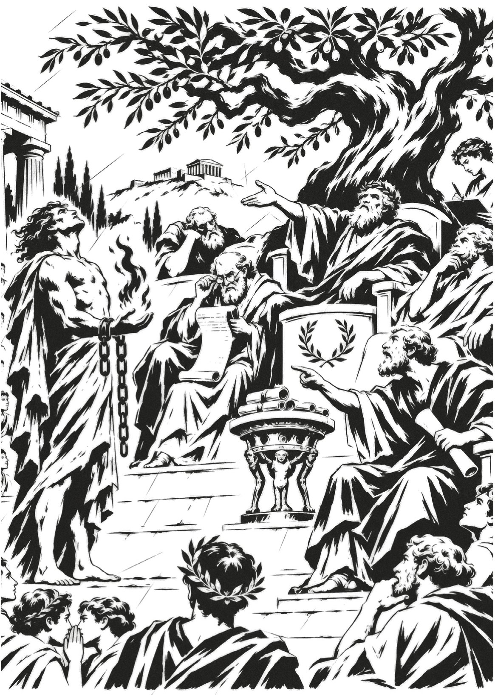

Prometheův trest
Pochrchlávaje a hekaje po dlouhém průvodním řízení odebral se mimořádný senát k poradě, jež se konala ve stínu posvátné olivy.
„Tak, pánové,“ zívl Hypometheus, předseda senátu. „Ale že se nám to zatrápeně protáhlo. Já myslím, že bych nemusel ani podávat resumé, no ale aby nebylo formálních námitek – Tak tedy obžalovaný Prometheus, zdejší občan, byv pohnán před soud, že vynalezl oheň a tím jaksi – ehm ehm – porušil stávající řád, se přiznal, že: za prvé skutečně vynalezl oheň; dále že je s to, kdykoliv se mu zlíbí, vyvolati týž činností zvanou křesání; za třetí že toto tajemství, respektive pohoršující objev nikterak řádně nezatajil ani neoznámil na příslušném místě, nýbrž jej svévolně prozradil, potažmo dal v užívání nepovolaným lidem, jak je dosvědčeno výpověďmi dotyčných osob, které jsme právě vyslechli. Já myslím, že to stačí a že bychom mohli hned přikročit k hlasování o vině a rozsudku.“
„Promiňte, pane předsedo,“ namítl přísedící Apometheus, „ale soudil bych, že vzhledem k vážnosti tohoto mimořádného tribunálu by snad přece jen bylo vhodnější, abychom k vynesení rozsudku přikročili až po důkladné poradě a – abych tak řekl – všestranné rozpravě.“
„Jak chcete, pánové,“ přivolil konciliantní Hypometheus. „Věc je sice jasná, ale chce-li někdo z vás ještě něco poznamenat, prosím.“
„Já bych si dovolil připomenout,“ ozval se votantI Ametheus
- Votant (lat.) – přísedící u soudu. Pozn. red.

a řádně odkašlal, „že podle mého mínění by se měla na celé věci zdůraznit zvláště jedna stránka. Pánové, já mám na mysli stránku náboženskou. Račte dovolit, co je to ten oheň? Co je to ta vykřesaná jiskra? Jak doznal Prometheus sám, není to nic jiného nežli blesk a blesk, jak je obecně známo, je projevem zvláštní moci Dia Hromovládce. Račte mně vysvětlit, pánové, jak přijde takový nějaký Prometheus k božímu ohni? Jakým právem se ho zmocnil? Kde vůbec jej vzal? Prometheus nám chce namluvit, že jej prostě vynalezl; ale to jsou hloupé výmluvy, – kdyby to bylo tak nevinné, proč by nevynalezl oheň například někdo z nás? Podle mého přesvědčení, pánové, Prometheus ten oheň prostě ukradl, a to našim bohům. Jeho zapírání a vytáčky nás nezmatou. Já bych jeho trestný čin kvalifikoval jednak jako obyčejnou krádež, jednak jako zločin rouhání a svatokrádeže. A my jsme tady proto, abychom co nejpřísněji potrestali tuto bezbožnou opovážlivost a chránili posvátný majetek našich národních bohů. Jen to jsem chtěl říci,“ končil Ametheus a rázně se vysmrkal do cípu své chlamydyII.
„Dobře řečeno,“ souhlasil Hypometheus. „Má ještě někdo co poznamenat?“
„Prosím za prominutí,“ děl Apometheus, „ale já nemohu souhlasit s vývody váženého pana kolegy. Já jsem se na to díval, jak řečený Prometheus rozžíhal ten oheň; a řeknu vám upřímně, pánové, vždyť – mezi námi – na tom docela nic není. Objevit oheň, to by dovedl každý lenoch, povaleč a pasák koz; my jsme na to nepřišli jen proto, že vážný člověk, to se rozumí, nemá ani pokdy, ani pomyšlení, aby si pohrával s nějakým křesáním kamínků. Ujišťuji pana kolegu Amethea, že to jsou docela obyčejné přírodní síly, jimiž se zabývati není důstojno myslícího člověka, neřkuli bohů. Podle mého soudu je oheň úkaz příliš malicherný, než aby se nějak týkal
- Chlamyda (řec.) – plášť ve starém Řecku nošený přes levé rameno a sepnutý kovovou sponou. Pozn. red.
věcí nám všem svatých. Ale věc má jinou stránku, na kterou musím obrátit pozornost pánů kolegů. Zdá se totiž, že oheň je živel velmi nebezpečný, ba dokonce škodlivý. Slyšeli jste řadu svědků, kteří vypověděli, že zkoušejíce Prometheův klukovský vynález utrpěli těžké popáleniny, ba v některých případech i škody na majetku. Pánové, rozšíří-li se vinou Prometheovou užívání ohně, čemuž bohužel se už nedá zabránit, nebude si nikdo z nás jist životem, ba ani majetkem; ale to, pánové, může znamenat konec veškeré civilizace. Stačí sebemenší neopatrnost – a před čím se zastaví ten nepokojný živel? Prometheus, pánové, se dopustil trestuhodné lehkomyslnosti tím, že uvedl na svět věc tak škodlivou. Já bych jeho vinu formuloval jako zločin těžkého ublížení na těle a ohrožování veřejné bezpečnosti. Vzhledem k tomu jsem pro doživotní trest na svobodě s tvrdým lůžkem a okovy. Domluvil jsem, pane předsedo.“
„Máte, kolego, docela pravdu,“ zafuněl Hypometheus. „Jen bych ještě podotkl, pánové, k čemu nám vůbec bylo třeba nějakého ohně? Copak užívali ohně naši předkové? Přijít s něčím takovým, to je prostě neúcta k zděděnému řádu, to je – ehm, jenom podvratná činnost. Zahrávání s ohněm, to nám tak ještě chybělo! A uvažte, pánové, kam to povede: lidé u ohně zbytečně zchoulostiví, budou se válet v teple a pohodlí, místo aby – nu, místo aby bojovali a podobně. Pojde z toho jen změkčilost, úpadek mravů a – ehm, vůbec nepořádek a podobně. Zkrátka něco se už musí stát proti takovým nezdravým úkazům, pánové. Doba je vážná, a vůbec. Jen to jsem chtěl připomenout.“
„Velmi správně,“ ozval se Antimetheus. „My všichni zajisté souhlasíme s naším panem předsedou, že Prometheův oheň může mít nedozírné následky. Pánové, netajme si, je to ohromná věc. Mít oheň ve své moci – jaké nové možnosti se tu otvírají! Uvádím jen namátkou: spálit nepřátelům úrodu, zažehnout jim olivové háje a tak dále. Ohněm, pánové, je nám lidem dána nová síla a nová zbraň; ohněm se stáváme skoro
13rovni bohům,“ šeptal Antimetheus a náhle ostře vybuchl: „Žaluji na Promethea, že tento božský a nepřekonatelný živel ohně svěřil pasákům i otrokům, komukoliv, kdo přišel; že jej neodevzdal povolaným rukám, které by ho střehly jako státní poklad a jím vládly. Žaluji na Promethea, že tímto způsobem zpronevěřil objev ohně, který měl býti tajemstvím knížat. Žaluji na Promethea,“ křičel vzrušeně Antimetheus, „že naučil rozněcovat oheň i cizince! Že jej nezatajil ani před našimi nepřáteli! Prometheus ukradl oheň nám tím, že jej dal všem! Žaluji Promethea z velezrady! Žaluji ho z úkladů proti obci!“ Antimetheus se křikem až rozkašlal. „Navrhuji trest smrti,“ vypravil ze sebe.
„Tak, pánové,“ promluvil Hypometheus, „hlásí se ještě někdo o slovo? Tedy podle náhledu soudu je obžalovaný Prometheus shledán vinným jednak zločinem rouhání a svatokrádeže, jednak zločinem těžkého ublížení na těle, potažmo poškození cizího majetku a ohrožování veřejné bezpečnosti, jednak zločinem velezrady. Pánové, navrhuji uvaliti na něho buď doživotní trest na svobodě zostřený tvrdým lůžkem a pouty, nebo trest smrti. Ehm.“
„Nebo obojí,“ vyhrkl zamyšleně Ametheus. „Aby se vyhovělo oběma návrhům.“
„Jak to, obojí trest?“ ptal se předseda.
„Právě o tom přemýšlím,“ bručel Ametheus. „Šlo by to třeba tak… odsoudit Promethea k tomu, aby byl doživotně připoután ke skále…, ať mu třeba supové vyklovají jeho bezbožná játra, račte rozumět?“
„To by šlo,“ děl uspokojeně Hypometheus. „Pánové, to by byl jednou exemplární trest na takové – ehm, zločinné výstřelky, že ano? Má někdo nějakou námitku? Tak bychom byli hotovi.“
***
„A proč jste, tati, toho Promethea odsoudili k smrti?“ ptal se Hypomethea při večeři jeho syn Epimetheus.
„Tomu ty nerozumíš,“ bručel Hypometheus ohryzuje přitom
14skopovou kýtku. „Panečku, taková pečená kýta přece jen chutná líp než syrová; tak vida, k něčemu je ten oheň přece jen dobrý. – To byly důvody veřejného zájmu, víš? Kampak by to vedlo, kdyby kdekdo směl beztrestně přijít s něčím velikým, no ne? Ale něco tomu masu ještě chybí – Už to mám!“ zvolal radostně. „Pečená kýta by se měla posolit a potřít česnekem! To je to pravé! Hochu, to přece je objev! Vidíš, na to by takový Prometheus nepřišel!“
Lidové noviny 5. 6. 1932
15